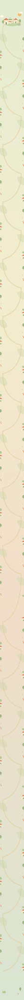
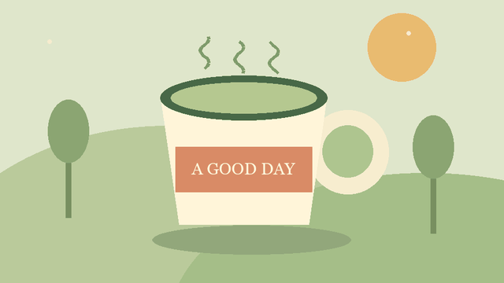

一张长卷 · 三十二种打开方式
灵感
漫游指南
手指动一动，故事就发生。
欢迎来到，一座可以互动的小镇。
INTERACTIONS从这里出发 ↓
打开小镇的来信
点一下信封，收下今天的邀请。
翻到故事的另一面
问题和答案，就隔着一次点击。
多知道一点点
打开说明，再关上继续旅行。
每个角落，都有故事
分别点击物件，看看里面藏了什么。
一份甜点的诞生
一步一步，看到完整的制作过程。
把这封信读完
点击展开，长信会把下面的内容推开。
不必一下子知道所有答案。
有些故事，展开了才完整。
我们把灵感种在小镇的每个角落。
一片叶子、一条小路、一扇窗，
都可以成为故事的入口。
愿你今天，也发现一点新的可能。
小镇居民 敬上为小镇点亮一盏灯
按住灯光按钮，松手会停止充能。
等待点亮 · 0%
拉开今天的序幕
点一下，看遮挡从画面里退场。
擦掉窗上的小雨
用手指在窗上擦一擦，发现晴天。
试着在窗户上擦一擦
一条路，慢慢出现
点击出发，让路线从起点生长。
跟着小车去兜风
小车会沿着弯道前进，再点可重播。
让好消息依次抵达
信息有先有后，读起来更有节奏。
给重要的事一点提醒
点击后轻轻呼吸三次，然后安静下来。
沿着河岸逛一逛
左右滑动，发现画面之外的小店。
← 左右滑动，同一条河岸的三家店 →
走进更深的森林
左右移动滑杆，远山和树木以不同速度移动。
晴天，还是雨天
拖动分界线，看同一场景的两种模样。
亲手调一杯好茶
把茶叶拖进杯子，试试放错位置会怎样。
把茶叶放进右边的杯子
读到这里，花才开
走近这一站，花朵才开始绽放。
等你走近，花就会开
阅读就是旅程的进度
在这一站向下滑，小车和路线跟着你前进。
继续向下滑动，路线会随阅读前进
让主角留在画面里
继续向下读，杯子留下，讲解依次改变。
一片叶子的清香
向下滑动，杯子留在画面里
像转动一卷小电影
滑动时间轴，前进或倒退到任意一帧。
第 01 / 60 帧 · 拖动时间轴
选一条属于你的路
去山间，或去海边，看到不同的下一幕。
不同选择，前往不同风景
给今天出一道小题
先猜一下，再看看正确的解释。
哪种素材，
可以把声音也留下？
点一个答案，看看解释
收集小镇的三个印章
找到茶叶、太阳和小花，解锁旅程纪念。
已找到 0 / 3 个印章
把好风景拼回来
依次点两块交换位置，拼回完整的小镇。
点两块交换位置，拼回完整画面
把你的旅程带走
写下名字，生成一张真的可以保存的纪念图。
换个角度看一杯茶
左右拖动杯子，或用滑杆旋转立体模型。
旋转 25° · 真实三维顶点投影
听，小镇的风铃响了
点击开启声音，看看画面如何跟着声音变化。
点击才会播放声音
一点点循环的生气
这是一张真实 GIF，点击可暂停或继续。

真实 GIF 文件 · 3 秒循环
让故事完整播放一次
真实 MP4 样片，支持播放、暂停与全屏。
9 秒原创图形样片 · 点击播放
从图文走进影像
点击视频封面，预览入口与播放承接效果。
点击播放同一段本地样片
真实视频号需在公众号后台插入
为今天放一朵烟花
点一下，让一颗圆点开成花，撒下纸片。
一朵小花，一场庆祝